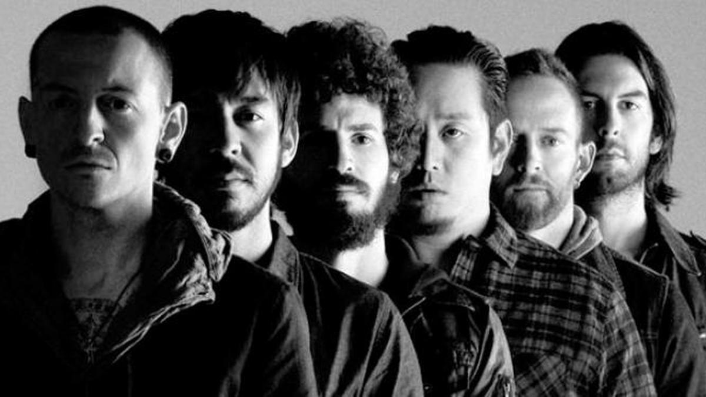

About
About Us
Linkin Park is an American rock band from Agoura Hills, California. The band's current lineup comprises vocalist/rhythm guitarist/keyboardist Mike Shinoda, lead guitarist Brad Delson, bassist Dave Farrell, DJ/turntablist Joe Hahn and drummer Rob Bourdon, all of whom are founding members. Vocalists Mark Wakefield and Chester Bennington are former members of the band. Categorized as alternative rock, Linkin Park's earlier music spanned a fusion of heavy metal and hip hop, while their later music features more electronica and pop elements. Formed in 1996, Linkin Park rose to international fame with their debut studio album, Hybrid Theory (2000), which became certified Diamond by the Recording Industry Association of America (RIAA). Released during the peak of the nu metal scene, the album's singles' heavy airplay on MTV led the singles "One Step Closer", "Crawling" and "In the End" all to chart highly on the Mainstream Rock chart; the latter crossed over to the pop chart.[1] Their second album, Meteora (2003), continued the band's success.[2] The band explored experimental sounds on their third album, Minutes to Midnight (2007).[3] By the end of the decade, Linkin Park was among the most successful and popular rock acts.[4] The band continued to explore a wider variation of musical types on their fourth album, A Thousand Suns (2010), layering their music with more electronic sounds. The band's fifth album, Living Things (2012), combined musical elements from all of their previous records. Their sixth album, The Hunting Party (2014), returned to a heavier rock sound, and their seventh album, One More Light (2017), was their first pop-oriented record. Linkin Park went on a hiatus when longtime lead vocalist Bennington died by suicide in July 2017. In April 2022, Shinoda revealed the band was neither working on new music nor planning on touring for the foreseeable future. Linkin Park is among the best-selling bands of the 21st century and the world's best-selling music artists, having sold over 100 million records worldwide.[5] They have won two Grammy Awards, six American Music Awards, two Billboard Music Awards, four MTV Video Music Awards, 10 MTV Europe Music Awards and three World Music Awards. In 2003, MTV2 named Linkin Park the sixth-greatest band of the music video era and the third-best of the new millennium. Billboard ranked Linkin Park No. 19 on the Best Artists of the Decade list. In 2012, the band was voted as the greatest artist of the 2000s in a Bracket Madness poll on VH1. In 2014, the band was declared as "The Biggest Rock Band in the World Right Now" by Kerrang!.
Members
Chester Bennington
Lead Singer
Chester Charles Bennington (March 20, 1976 – July 20, 2017) was an American singer, best known as the lead vocalist of rock band Linkin Park. He was also the lead vocalist of the bands Grey Daze, Dead by Sunrise, and Stone Temple Pilots.

Mike Shinoda
Singer and Rythm Guitarist
Michael Kenji Shinoda born February 11, 1977 is an American musician, singer, rapper, songwriter and record producer. He co-founded Linkin Park in 1996 and is the band's lead vocalist, as well as rhythm guitarist, keyboardist, primary songwriter and producer. Shinoda later created a hip-hop-driven side project, Fort Minor, in 2004. He has also served as a producer for tracks and albums.
Brad Delson
Solo Guitarist
Bradford Phillip Delson (born December 1, 1977) is an American musician, best known as the lead guitarist and one of the founding members of the rock band Linkin Park.
Rob Bourdon
drummer
Robert Gregory Bourdon (born January 20, 1979) is an American musician, best known as the drummer and co-founding member of the American rock band Linkin Park. The youngest member of the band. After joining his high school's jazz band in his sophomore year, he met Brad Delson and Mike Shinoda, who both lived nearby in the San Fernando Valley. Bourdon and Delson would form their own band, Relative Degree.